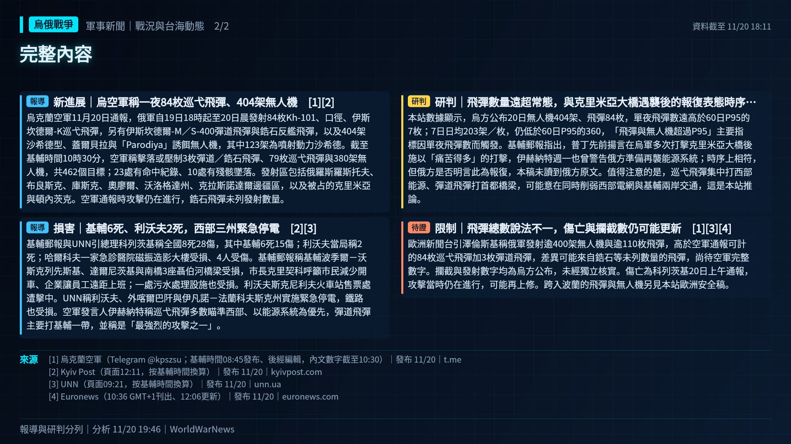

俄軍20日以84枚巡弋飛彈、404架無人機大規模空襲烏克蘭：基輔3座聶伯河大橋受損、全國8死28傷，西部多州緊急停電


報導新進展｜烏空軍稱一夜84枚巡弋飛彈、404架無人機
烏克蘭空軍11月20日通報，俄軍自19日18時起至20日晨發射84枚Kh-101、口徑、伊斯坎德爾-K巡弋飛彈，另有伊斯坎德爾-M／S-400彈道飛彈與鋯石反艦飛彈，以及404架沙希德型、蓋爾貝拉與「Parodiya」誘餌無人機，其中123架為噴射動力沙希德。截至基輔時間10時30分，空軍稱擊落或壓制3枚彈道／鋯石飛彈、79枚巡弋飛彈與380架無人機，共462個目標；23處有命中紀錄、10處有殘骸墜落。發射區包括俄羅斯羅斯托夫、布良斯克、庫斯克、奧廖爾、沃洛格達州、克拉斯諾達爾邊疆區，以及被占的克里米亞與頓內茨克。空軍通報時攻擊仍在進行，鋯石飛彈未列發射數量。
報導損害｜基輔6死、利沃夫2死，西部三州緊急停電
基輔郵報與UNN引總理科列茨基稱全國8死28傷，其中基輔6死15傷；利沃夫當局稱2死；哈爾科夫一家急診醫院磁振造影大樓受損、4人受傷。基輔郵報稱基輔波季爾－沃斯克列先斯基、達爾尼茨基與南橋3座聶伯河橋梁受損，市長克里契科呼籲市民減少開車、企業讓員工遠距上班；一處污水處理設施也受損。利沃夫斯克尼利夫火車站售票處遭擊中。UNN稱利沃夫、外喀爾巴阡與伊凡諾－法蘭科夫斯克州實施緊急停電，鐵路也受損。空軍發言人伊赫納特稱巡弋飛彈多數瞄準西部、以能源系統為優先，彈道飛彈主要打基輔一帶，並稱是「最強烈的攻擊之一」。
研判研判｜飛彈數量遠超常態，與克里米亞大橋遇襲後的報復表態時序相連
本站數據顯示，烏方公布20日無人機404架、飛彈84枚，單夜飛彈數遠高於60日P95的7枚；7日日均203架／枚，仍低於60日P95的360，「飛彈與無人機超過P95」主要指標因單夜飛彈數而觸發。基輔郵報指出，普丁先前揚言在烏軍多次打擊克里米亞大橋後施以「痛苦得多」的打擊，伊赫納特週一也曾警告俄方準備再襲能源系統；時序上相符，但俄方是否明言此為報復，本稿未讀到俄方原文。值得注意的是，巡弋飛彈集中打西部能源、彈道飛彈打首都橋梁，可能意在同時削弱西部電網與基輔兩岸交通，這是本站推論。
待證限制｜飛彈總數說法不一，傷亡與攔截數仍可能更新
歐洲新聞台引澤倫斯基稱俄軍發射逾400架無人機與逾110枚飛彈，高於空軍通報可計的84枚巡弋飛彈加3枚彈道飛彈，差異可能來自鋯石等未列數量的飛彈，尚待空軍完整數字。攔截與發射數字均為烏方公布，未經獨立核實。傷亡為科列茨基20日上午通報，攻擊當時仍在進行，可能再上修。跨入波蘭的飛彈與無人機另見本站歐洲安全稿。
- [1] 烏克蘭空軍（Telegram @kpszsu；基輔時間08:45發布、後經編輯，內文數字截至10:30）｜發布 11/20
- [2] Kyiv Post（頁面12:11，按基輔時間換算）｜發布 11/20
- [3] UNN（頁面09:21，按基輔時間換算）｜發布 11/20
- [4] Euronews（10:36 GMT+1刊出、12:06更新）｜發布 11/20